Saturday 31st January We were awake before 6:00 and after packing up the remainder of our luggage, we went up for breakfast. The boat had been moored a short distance away from the pier so we had docked by the time we got upstairs. After eating we said goodbye to the staff and half the group who were in different transport and were then taken by mini-van back to Phuket. By about 9:30 we were back at Isara Resort at Nai Yang.

Our room was not ready when we arrived but the previous occupants had already checked out so we were able to get into the room about 30 minutes later. We waited by the pool and spent most of the rest of the day there. We walked to the beach for lunch (banana and chocolate pancakes and banana shakes) before returning to the pool for the afternoon.
In the evening, we had a couple of drinks on the balcony while looking at some of the photos from the last week. We ate at Gold Diggers and got through slightly more Sang Som than we intended to. We did not manage to stay awake for the football.
Sunday 1st February We got up, had breakfast and finished packing and put our big bags into the luggage room. We had booked a taxi for 9:30 and it turned up a few minutes early. We were dropped at the airport, went straight through security and were in the departures area by 9:45. We then had a two hour wait for our Air Asia flight to Don Mueang. We departed on time and got to Don Mueang at about 1:20pm.
After a long walk through the airport, we had a wait of about 10 minutes for a taxi and then a journey of 55 minutes to the Mövenpick Hotel on Sukhumvit 15. We had not stayed here before but were tempted by the free chocolate hour. We checked in dropped our stuff in the room and went out to get something to eat. We ate at a food court on Sukhumvit Road and had the spiciest meals we have had since getting to Thailand. We were not able to buy alcohol anywhere today before 6pm due to there being elections. We returned to the room to wait for chocolate hour to start.
Chocolate hour was a very healthy experience with an all you can eat selection of chocolate cake, chocolate pudding, chocolate biscuits and a chocolate fountain. After we had eaten more than enough chocolate, we returned to the room for showers.
We went out at 6 when everywhere was serving alcohol again. We went first to "The Old German Beerhouse on 11". There was a bit of confusion about the location of this as it was not in the same place as when we went in it a couple of years ago but we eventually worked out that there are two of them very close together. We had a wheat beer in there and then crossed Sukhumvit to Soi 8 where there were a couple of craft beer bars.

We had a few drinks in The Brewhouse and then went to The Tipsy Tap where they had the same 7.5% IPA that I had been drinking in Penang (Heart of Darkness - Loose Rivet). A couple of pints of this each and things were starting to get a bit messy. On the way home, we stopped for one in "The Old German Beerhouse on 13" while watching the end of the football and were back in the hotel just after 11.
Monday 2nd February We did not do a lot today. There were not really any sights that we wanted to see in Bangkok as we will have plenty of temples lined up for the next few weeks. We decided to have a couple of quiet days at the hotel instead. Roz went to the pool in the morning while I stayed in the room.
We made it out of the hotel by 11:30 and got the Sky Train to MBK for a late breakfast in the food hall. After buying a few things we needed, we got the train back and had an hour or so by the pool before chocolate hour.
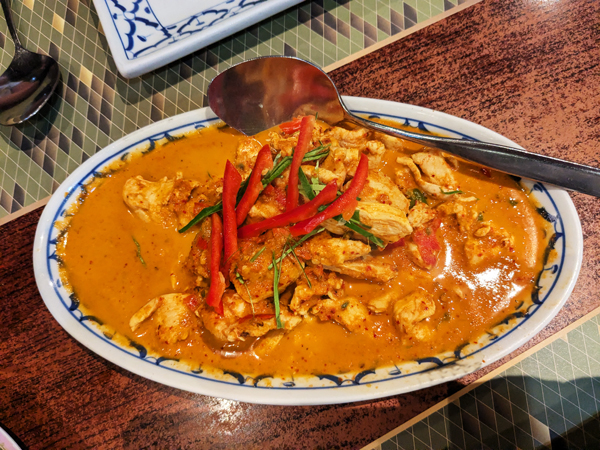
We went back down to the bar at 6 and had our welcome drinks while booking a few things for the next week. We left the hotel at 7 and got the Sky Train to the Asia Hotel and went for a few beers at Feat Lab. We walked from there back to the MBK and had an excellent meal at Ban Khun Mae. After eating, we found another craft beer place - Sip 'n Drip - somewhere we had not been to before. After one in there, we made the mistake of ordering a taxi to get us back to Sukhumvit. We were not expecting so much traffic at this time but it took a lot longer than the Sky Train would have done. We had a couple more beers in The Old German Beerhouse on 13 before returning to the hotel.
Tuesday 3rd February Another day of not doing a lot. Roz went out to buy breakfast from 7-Eleven and we headed up to the pool at around 11:30. We stayed there a few hours before coming back down for chocolate hour. After eating way too much chocolate for the third day in a row, I went for a walk and Roz went for a swim. We had no idea where we would eat to night but I had walked past Madam Saranair Restaurant earlier and we decided to it it a go. This turned out to be a very good choice as the food was excellent. We had a much needed night off alcohol and were back in the room by 8:45.
Wednesday 4th February Due to our quieter night last yesterday, we were able to start the day in a slightly healthier way this morning. We were both up by 8:30. Roz went for a swim while I went for a 5km run in the gym for the first time on this trip. Roz went out to buy breakfast again and we were then able to have a few hours by the pool. We returned to the room for showers and checked out at 3.
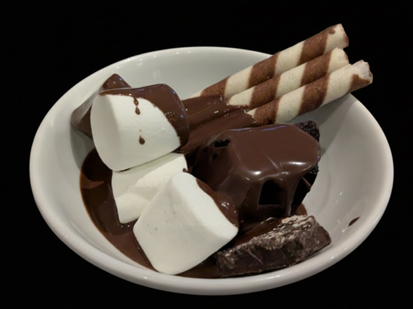
We caught the BTS to MBK again and had a late lunch in the food court. We then got the BTS back and went for the fourth chocolate hour of our stay here. At 5, we got the free shuttle tuk-tuk from the hotel to Terminal 21, a shopping centre next to Sukhumvit MRT station. There were direct trains from there to Bang Sue which is a short walk from Krung Thep Aphiwat Central Terminal Station from where we were due to get the 21:25 train to Vientiane. As the journey had all gone smoothly, we arrived at the station with 3 hours to spare.
The three hours at the station went quite quickly despite no having a lot to do. We started boarding on time at 21:05 and departed 20 minutes later, also on time.
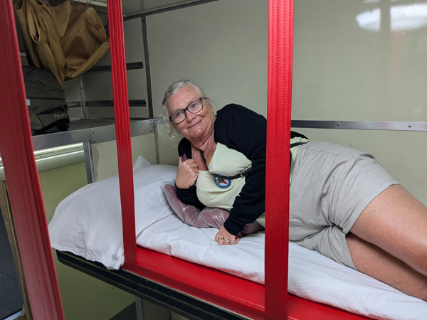
The train is a different layout to all the other overnight trains we have been on previously. This one has open compartments with four bunks in each one. We had the two upper bunks in our compartment (the lower ones were sold out). There is plenty of space by our heads to store luggage and there is a lot more room on the upper bunks than there is on the other trains. We have an electric socket each in the compartment and all in all, it is a lot more comfortable. We got to sleep at about 11:00.
Thursday 5th February We were awake by about 6:30 after a reasonable night's sleep. All the bedding was put away and we were left in the compartment on our own for the remainder of the journey as one of the ones in the compartment went to join her friends and the other one got off the train. The train stopped in Nong Khai at 7:55. Everyone got off the train and the carriages not going to Laos were removed. Those of us who were going to Laos had to go through immigration to exit Thailand and then re-board the train. As soon as everyone had got through, the train continued its journey. It was about another ten minutes until we crossed The Friendship Bridge into Laos. We arrived at Vientiane Khamsavath station a few minutes early at 9:00.
At the station, it was all fairly chaotic as everyone tried to get through Laos immigration. We had not bought e-visas meaning that we had to fill out the forms to get visas-on-arrival. We think this worked out quicker for us as we were two of the first to get process and were able to by-pass the queues for people that did have e-visas. Outside the station, there were not too many options for transport into Vientiane. The taxi drivers knew we were not in a good bargaining position so we had to pay ฿500 to get taken to Xaysomboun Hotel and Spa. We checked in but could not have our room yet so headed off to start our sight-seeing.
We started off by trying to get some Laos Kip as we had none with us. Last time we arrived in Laos we had problems finding a cashpoint that would work and today was no different. We tried a few banks before going over to Patuxai, a 1960's war memorial. After stopping here for a few photos we continued our search for money and eventually found a bank that would change some Thai Baht for us. This meant that we could stop for breakfast before walking to our next sight Pha That Luang.
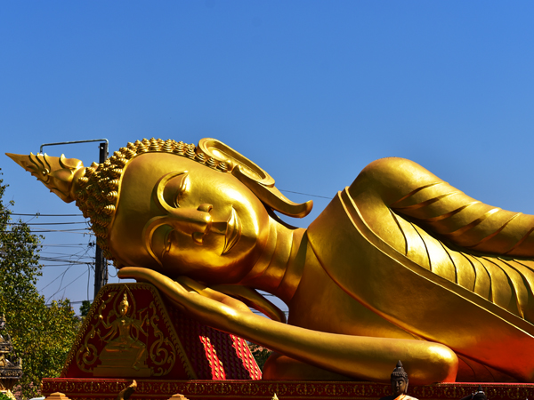
We had visited Pha That Luang in 2001 but the whole area between the temple and our hotel had changed beyond recognition. We remember small residential roads with very little traffic. Where these were, there are now busy dual-carriageways and modern office blocks. Pha That Luang probably had not changed much in 25 years and was still a spectacular sight. We walked around the main temple and then spent some time walking round some of the near-by buildings which were equally impressive, particularly the area with the reclining Buddha.
We got a tuk-tuk back to the hotel by about 12:30 by which time we could check into our room. We had been upgraded to a "Junior Suite" so had a very nice room with loads of space for about £30 for the night. After much needed showers, Roz went to the pool for an hour or so while I stayed in the air-conditioning.
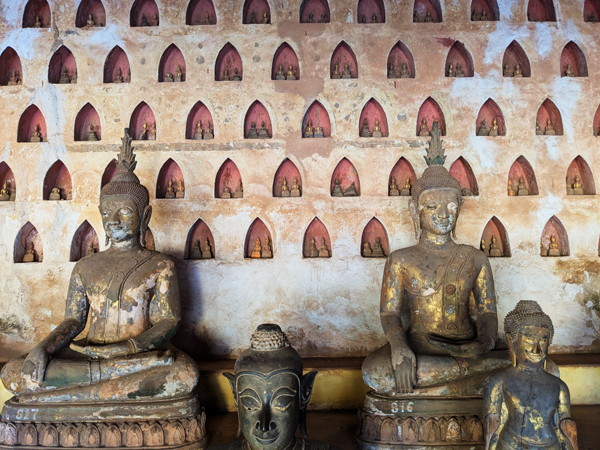
We went out again to continue our sight-seeing at 3. We walked to Wat Sisaket stopping for photos of That Dam Stupa along the way. Wat Sisaket was all quite interesting again and was another place that we had visited 25 years ago. We then managed to find a bank (BCEL) that not only let us take out money out but only charged 0.5% which was considerably better than anywhere else. We walked along parallel to the river and found a bakery for something to eat before walking back to the hotel.
By the time we got back, we did not have much time until sunset which was one of the highlights when we were here before. We had showers and walked back down to the river. This was all a bit of a disappointment. Last time we were here you could sit at little stalls, each with a few plastic chairs, drinking Beerlao as the sun went down. It was a lovely peaceful spot to sit for a couple of drinks at the start of the evening. Today the section of the river that we used to sit by had dried up and we were a long way from the main river. There is now a busy dual-carriageway running along parallel to the river with lots of high-rise buildings on the other side. There is a huge night-market and a large fun-fair all generating plenty of noise..... and there was no-one selling Beerlao. The sunset itself was still nice enough and we sat watching until the sun had completely disappeared but it was certainly not the same any-more.
We managed to get back across the dual-carriageway and walked to The Tipsy Elephant, a rooftop bar where we planned to stop for a drink. This did look very nice but was completely full so we could not get a table. We left there and spotted Nazim's Indian Restaurant over the road. We had already decided that we would eat Indian food tonight and are fairly sure that this was a branch of the same chain of restaurants that we ate in 25 years ago. We had excellent curries and a couple of large bottles of Beerlao (₭30,000 or £1 each) before walking back to the hotel for an early night.
Friday 6th February We were awake early and went for breakfast at about 7. We checked out of the hotel at 7:45 and went outside to try and get taxi to the train station. We knew roughly what the price should be from the LOCA taxi app. The first tuk-tuk that stopped wanted ₭400,000 but came down to ₭200,000 fairly quickly. It was a journey of about 40 minutes to the station.
The station was not the same as the one we had arrived at yesterday but was slightly further out at Don Noun. This was another huge new station built with Chinese money mainly to cater for trains to and from China. We had booked tickets for the 9:50 train to Luang Prabang. We got to the station at about 8:30 and first had to go and collect tickets. We had booked through 12go.com and had confirmation but not the actual tickets. We were directed to the ticket office where it was not obvious which desk we had to go to. In proper Chinese fashion, we were told to get in one queue then when we were near the front of that one, we were told to go somewhere else. However, when we were standing in the second queue, a woman appeared with our tickets in her hand. After checking our passports, we were given the tickets and made our way into the station.
We had to go through airport type security to get into the station. Here we lost the bottle of Sang Som that we had bought with us from Bangkok. An unopened bottle of wine was allowed through but not the Sang Som, apparently because it had been opened. Once through security we had a wait of about 45 minutes for the train.
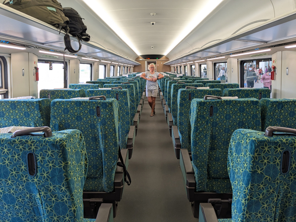
We boarded at 9:30 and took our seats in the first class compartment. The trains are all new and very comfortable. The compartment was only 25% full so we had a couple of seats each although it did fill up a bit when we stopped at Vang Vieng. All very different to our last journey in this direction from Vientiane!
We arrived in Luang Prabang on time at 11:50. Being in first class meant that we were in the centre of the train so were out of the station fairly quickly. After a bit of haggling, we got offered a lift into town for ₭200,000. They said this would be just for us but we ended up sharing with two other blokes. This didn't really matter as we left straight away and we were dropped off first. We were dropped at My Dream Resort just after midday.
We had booked three nights here for Roz's birthday. We had to wait by the pool for an hour and were then given our "private villa". This is a lovely big room with a vary nice balcony overlooking the garden. We did a bit of unpacking then went out for lunch and a bit of a look round. It was about a 20 minute walk from the resort to the start of the "Historic District". We had lunch at a cafe then walked along The Nam Khan river to where it flows into The Mekong. After a few photos there, we went to have a look around Wat Xiengthong which is at the meeting point of the rivers.
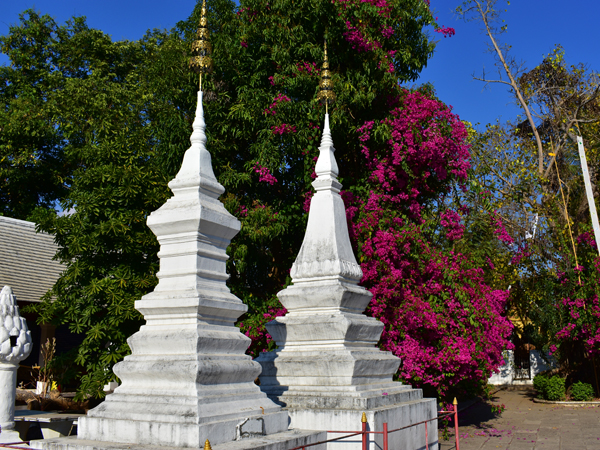
We walked back to the centre along The Mekong and had a look at a few restaurants for tomorrow night without finding anything that looked too promising. We went into one more wat before walking all round Phousi Hill. This is apparently the best spot for watching the sunset but there were far too many people around so we decided not to climb it. We had a look at a couple of supermarkets but white wine seems very hard to get here for some reason so we were not able to get anything to replace our confiscated Sang Som. We got back to the hotel before 6 having spotted a reasonable looking Italian restaurant for tomorrow on the way.
We were both worn out again by the time we were back. We had a couple of beers on our balcony and then ate at the resort restaurant. We were back in the room just after 9.
Saturday 7th February We got up, had breakfast and decided to go straight out and do today's sight-seeing before it got too hot. We were thinking of climbing Phousi Hill but Roz has had a bad knee for the last couple of days so we decided to put that off until tomorrow. We headed instead to the Royal Palace & National Museum.
This was not actually that interesting. There was a nice enough wat there that you could not go into but the rest of the buildings were not that spectacular. Roz went into the main bit but I would have had to deposit my bag and camera so I could not be bothered. We left there and walked to Wat May Souvannapoumaram, just about next door. This was the temple featured on the cover of our Lonely Planet 25 years ago. We did not manage to get a picture of a monk in the doorway this time but it was nice enough to wander round anyway.
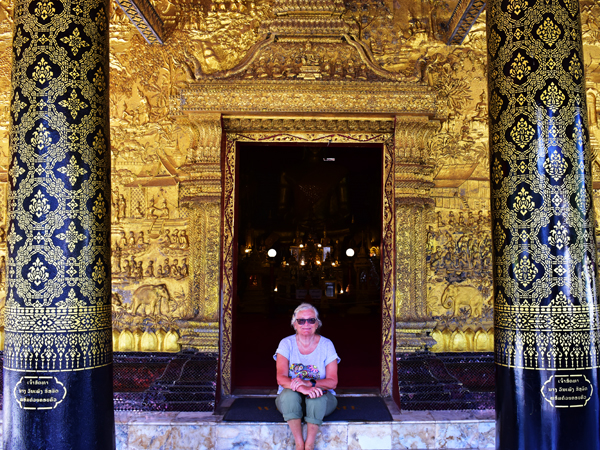
We started walking back towards the resort stopping at a BCEL ATM for more cash. On our way back we stopped at Wat Wisunarat. We had walked past this a couple of times and decided we may as well go in. This was a good move. The outside bit was all quite nice again but at the last minute we decided to go into the main hall there. This contained the largest Buddha in Luang Prabang as well as a lot of smaller Bhuddas. Probably my favourite sight so far here. We were back in our villa by about 12:30.
I did go out for another walk but we spent most of the rest of the afternoon by the pool.
We started the birthday celebrations at 6. I had managed to find a bottle of Sauvignon Blanc for Roz. She had a few glasses of that and I had a couple of bottles of Beerlao IPA while sat on the balcony having a video call with Jane. We started walking back into the centre at about 7:30 and stopped for a drink at Khua Kao the restaurant just the other side of The Old French Bridge. We ate at La Silapa where we had very good pizzas and a couple more bottles of wine.
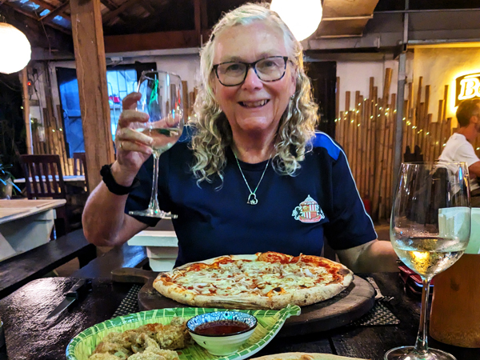
When we had finished the second bottle we went off to try and find somewhere showing the Arsenal v Sunderland game. We had expected it to be on in Outback Laos but they didn't have the right channel. They directed us down the road to Redbul Restaurant & Bar which was quite busy and had a few other Sunderland fans in. We didn't have the best of views of the game but we stayed until Sunderland went 2 - 0 down in the second half before getting a tuk-tuk home. We finished the bottle of wine before going to bed.
Sunday 8th February We both felt quite rough when we woke up so did not do a lot all morning. We got up and went to breakfast and then went back to sleep until midday. At midday we got up and went to the pool for a couple of hours by which time we had just about fully recovered. We had leftover pizza on the balcony for lunch and then returned to the pool. Neither of us could be bothered with the planned walk up Phousi Hill! I had another walk round the Historic District to get my steps in but that was about it for the afternoon.
We went out at 6:30. Swansea were kicking off at 7:00 and we did not know if the Redbul place we were in last night would show it. They had a look through all their channels but could not find it. We watched the first half on my phone while we ate and then walked back at half time. The hotel's Wi-Fi was not good enough to be able to watch the second half but we followed the game on Flash Scores while finishing our last Beerlao. Both in bed before 9.
Monday 9th February We were up at 5:45 and after a brief look outside the hotel for monks, we packed up and checked out. We were picked up by minibus at about 6:20 and driven to the river for the start of our two day cruise up The Mekong. We had done this journey by public boat 25 years ago but had gone a bit more upmarket this time. We had booked through Mekong Cruise but ended up on a boat belonging to Mekong Lover Cruise. The boats can take up to 40 passengers but there were only 8 of us today so it was all very comfortable. There was a French family of four and a French/Belgian couple as well as us
We set off at about 7. The total distance for the trip was 380km. Day one included one stop at Pak Ou Caves, home to over 2,000 Buddha statues and a revered pilgrimage site for the Lao people. The stop came after a couple of hours. It was all quite good and worth seeing although not sure it would have been worth a dedicated trip from Luang Prabang. We were given about 40 minutes to see the statues before continuing up river. A very good lunch was served at about 12:30.
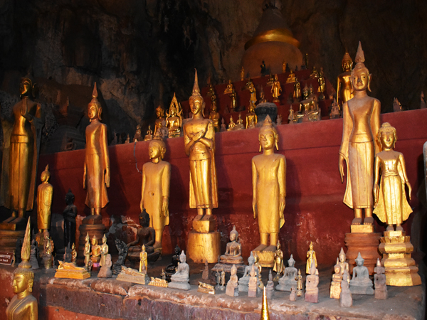
The day was spent lazing around on the boat, reading or just watching the scenery as we went past. With only 8 passengers, there was loads of space for lying around - a complete contrast to the last time we did it. Also unlike last time, we managed to get to Pak Beng the intended overnight stop. We arrived there at about 4:45 and were met by drivers from our hotels. We were driven to The Luang Say Lodge along with the French/Belgian couple.
A night at The Luang Say Lodge was included in the cost of our cruise. Our room did not have a balcony but did have plenty of windows offering nice views of the river.
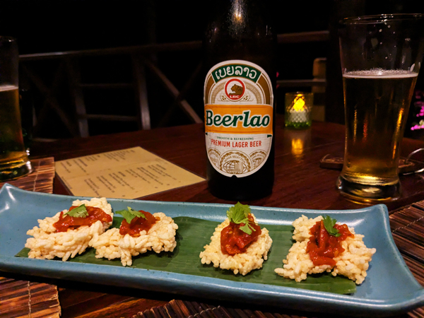
The hotel was a bit isolated meaning that we just about had to eat in the restaurant. The only option was the $25 set menu. This was a few courses and included the best laab we have ever had in Laos. We ate the meal with a couple of Beerlao's and were back in the room by 8:30
Tuesday 10th February Another 5:45 start this morning. We got up, packed and went to reception to check out and pay for last night's meal. At 6:20, the four of us were taken back to the boat where we were joined about five minutes later by the French family. We left Pak Beng and continued our journey up-river at 6:45.
Today's "excursion" was a visit to a village, an hour or so after we had left Pak Beng. This was not particularly exciting. It involved climbing up a sandy bank and a few steps to get to about 20 or so bamboo huts. We walked through the village stopping to hear assorted bits of information about the locals. We were all stood around watching a group of women who breast-feed each other's babies when the Belgian woman in our group, who had not been well yesterday, feinted.
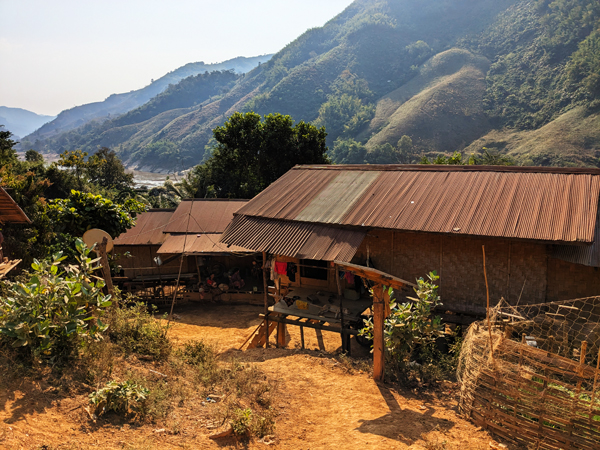
She recovered quite quickly and went straight back to the boat with her other half. The rest of us had a slightly longer walk but were all back on the boat within about 10 minutes of the incident. The highlights of the visit were probably a piglet and some friendly local dogs.
Back on the boat, the rest of the day was fairly similar to yesterday. Lunch was very good again and the day was spent sitting around, reading and enjoying the views. We arrived in Houay Xay slightly later than planned at about 16:45.
From here things went remarkably smoothly. All eight of us plus our guide were met by a mini-van at the pier. The Belgian/French couple were dropped at their hotel in Houay Xay as they are staying in Laos. The rest of us continued in the van to the immigration point at Friendship Bridge 4. We all went through immigration without being ripped off as much as last year - they only charged us ₭10,000 (30p) each to leave the country. We bought our tickets for the shuttle bus to take us across the bridge and said goodbye to our guide. We still had about £10 worth of Kip left. Roz managed to buy four cans of Beerlao with half of it before getting on the shuttle bus.
Thai immigration was reasonably quick on the other side. We had booked a night at Fortune Riverview Hotel in Chiang Khong on the opposite side of the river to Houay Xay. We thought we would have to haggle with a taxi driver for the five mile journey but there was a taxi stand there with songthaew type things which were a fixed price. Better still, we could pay with Kip. By this time, we had about $2 worth of Kip left. It was no use to us so we gave it to a couple going the other way and got into the songthaew.
We got to the hotel just after 6pm, about an hour and forty minutes after going past it on the boat. There were not a great deal of restaurant options around the hotel so we had a couple of our cans of Beerlao on the balcony (overlooking The Mekong again) and then went and got takeaways from 7-Eleven. We ate these with the other two cans of Beerlao back on the balcony and had another early night.